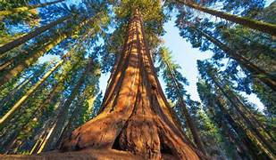
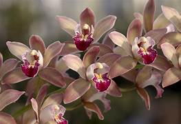
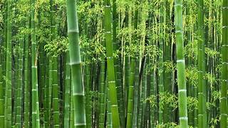

Living Flora

Sequoia
Giant trees native to California's Sierra Nevada mountains.

Orchid
Diverse family of flowering plants with colorful and fragrant blooms.

Bamboo
Fast-growing grass with various uses in construction and cuisine.